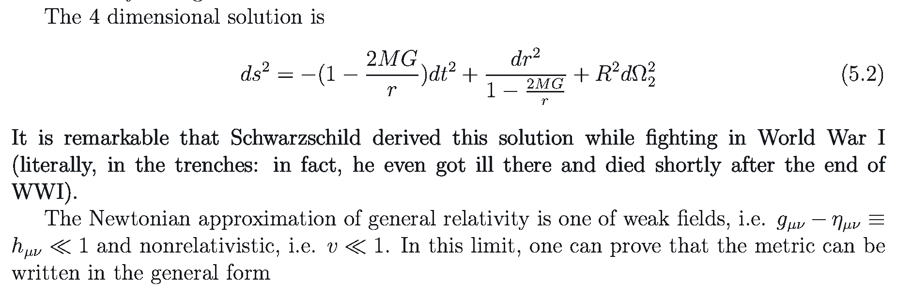

S.Albayrak Anasayfa Kategoriler
[next] [prev] [prev-tail] [tail] [up]
Schwarzschield genel görelilikteki meşhur çözümünü birinci dünya savaşı sırasında, üstelik baya baya siperde çatışırken bulmuş.1 
1 https://arxiv.org/abs/0712.0689
[next] [prev] [prev-tail] [front] [up]